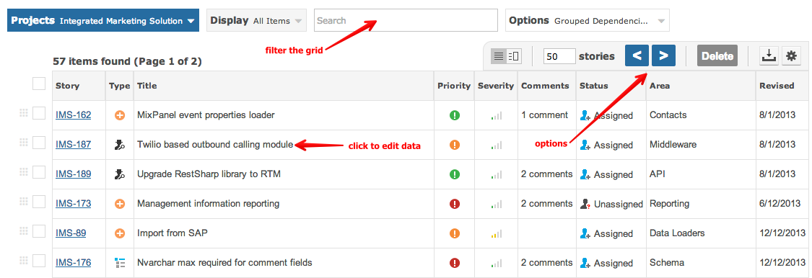

Items within project can be displayed in a grid that can be sorted, filtered and ordered.

Every row in the grid represents an individual item.
The following is an overview and showcase of features available to the item grid within Gemini.